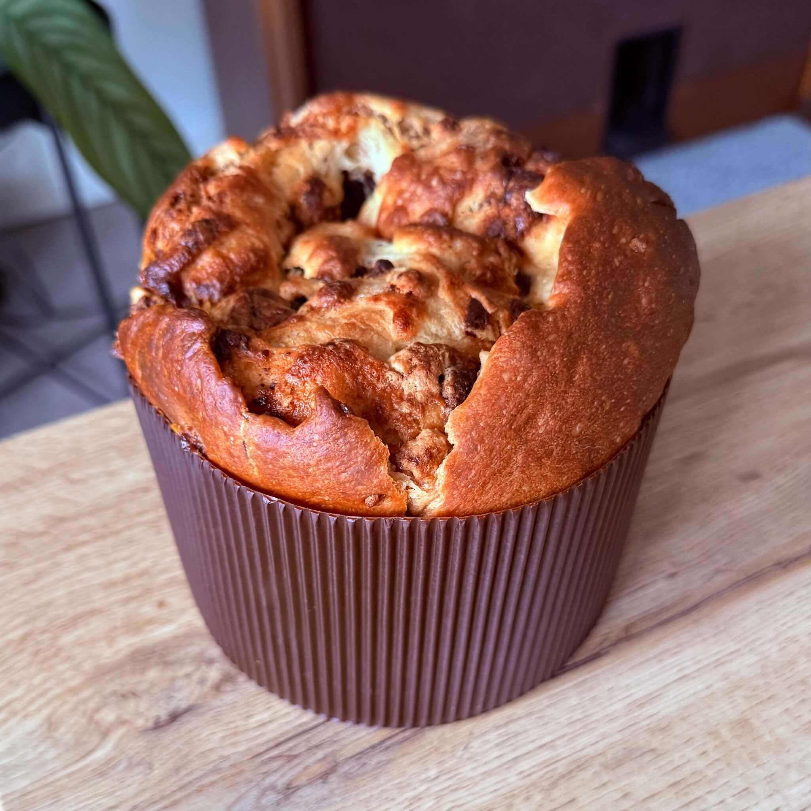

ingrediënten
- 200 ml water
- 14 g droge gist
- 3 eierdooiers
- 150 g roomboter of margarine
- 100 g suiker
- 50 ml panettone aroma
- 500 g patent tarwebloem
- Een snufje zout
- 400 g chocoladedruppels
voorbereiding
- Doe het water, de droge gist, de suiker, de eierdooiers, de panettone aroma en 100 g roomboter of margarine in een kom. Meng het goed.
- Voeg het tarwebloem met een snufje zout toe tot het gemengd is.
- Bedek de kom met vershoudfolie en laat het één uur rusten.
- Open de kom en maak vier vouwen in het deeg, waarbij je elke hoek over de andere heen trekt. Dek opnieuw af en laat nog eens 30 minuten rusten.
- Herhaal deze procedure vier keer, of totdat het deeg mooi elastisch en glanzend is.
- Vet een oppervlak in met plantaardige olie en rek het deeg uit tot een pizzavorm.
- Voeg de chocoladedruppels toe en rol het deeg uit.
- Snijd het deeg in twee delen en doe elk deel in een panettonevorm van 500 g.
- Bedek en laat het nog een half uur rusten.
- Voordat je het in de oven plaatst, maak je een kruisvormige snede in de bovenkant van elke chocotone en voeg 25 g roomboter of margarine toe.
- Bak in een voorverwarmde oven op 180ºC gedurende ongeveer 35 minuten.
observaties
Fermentatietijd: De fermentatietijd kan afhankelijk van de omgevingstemperatuur variëren. Op koudere kamertemperaturen kun je de rustintervallen verdubbelen (een uur in plaats van 30 minuten) of de procedure meerdere keren herhalen totdat het deeg mooi elastisch en glanzend is.
Panettone bakvorm: Panettone bakvormen kunnen wegwerpbaar of herbruikbaar zijn en zijn veelal te vinden in culinaire of bakwinkels. In Utrecht vond ik beide soorten bij Betsies Kookwinkel, echter is Hema ook een optie. Als alternatief is het mogelijk om de vormen met bakpapier te maken, met een diameter van 13 cm en een hoogte van 10 cm.
over de ingrediënten
Droge gist
De gebruikte droge gist is van het gebruikelijke type en wordt in supermarkten verkocht als basis gist, instant gist of gist levure.
Panettone aroma
Het is zeldzaam om kant-en-klare panettone aroma te vinden in Nederland. Als alternatief kun je een zelfgemaakte aroma maken met de volgende ingrediënten:
- 1 kopje cognac of rum
- 1 eetlepel vanille-extract
- 2 sinaasappels
- 2 citroenen
- 3 eetlepels suiker
- 10 g kaneelpoeder of -stokjes
- 10 g kruidnagel
- Nootmuskaat naar smaak
- 1 kopje water
Verwijder de schil van de citroenen en sinaasappels en pers de sappen uit elke vrucht. Voeg alle ingrediënten toe aan een pan en mix tot het kookt. Zet vervolgens het vuur lager en blijf mixen totdat het dikker wordt tot een stroperige consistentie.
Een ander alternatief is om geen panettone aroma te grebuiken, maar om de rumsmaak aroma, de vanillesmaak aroma of het bourbon vanille extract, de sinaasappelschil en eventueel andere smaakmakers direct in het deegmengsel te gebruiken.
Patent tarwebloem
Gebruik patent tarwebloem of patentbloem. Kies in geen geval voor tarwemeel waaraan bakpoeder is toegevoegd (zelfrijzend bakmeel of iedere soort tarwemeel verrijkt met bakpoeder).
Chocoladedruppels
Als je geen chocoladedruppels kunt vinden (of het is veel duurder), kun je deze vervangen door chocoladerepen die in kleine stukjes zijn gesneden (ongeveer een halve centimeter).
referenties
- Panettone zonder kneden, van instagram @receitaemcasaoficial (Portugees)
- Panettone aroma recept (Portugees)